Home Backup/Emergency Power for a Week or More
Home Backup/Emergency Power for a Week or More
or, Vehicle-to-Home (V2H)
Home Backup/Emergency Power for a Week or More
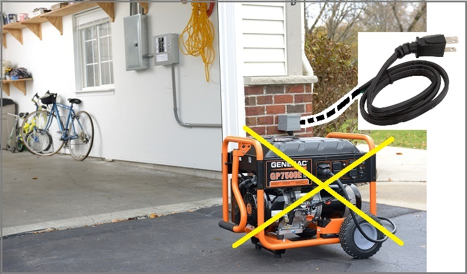 . 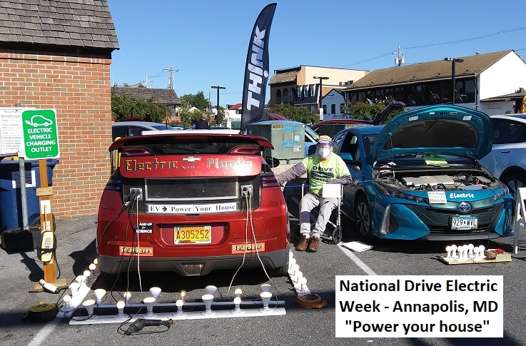
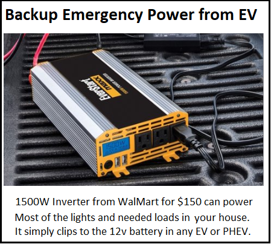
See my other EV car hacks
Download a 1page handout on EVs for clean air AND emergency power
EV Camping: Consider EV camping (Glamping?) with pollution free HVAC all night. See section at end.
This article apples to EVERY hybrid or EV no matter the make or model.
EV's and Emergency Power: An exciting advantage of EV's, Hybrids and Plugin-Hybrids is the large size of their batteries and/or generators for emergency backup power. The typical plugin EV has a battery capacity of 10 to 100 kWh. Conventional hybrids only have about 1.5 kWh, but will use their gas engine on demand to maintain the battery. This is enough to power the average American home (1 kW average load) for a day to a week if the house drops to a less wasteful usage of power. If the house is operated conservatively with only lights and the refrigerator and maybe well-pump or so, the average power can drop to around 250 W consuming only about 6 kWh per day. Similarly a hybrid or plugin-Hybrid has a generator of at least 50 kW capacity or more. Once the battery is drawn down, the engine and generator can maintain emergency power for a week or more by starting up as needed to maintain the battery (while consuming about 7 gallons of gas or so).
Self Load and Operating: To operate unattended, the car has to be left in the ON or READY mode to maintain itself. And the vehicle system adds an additional 250 to 500 W load and so the operating time estimates will be about half compared to the house kWh alone. Further, because they are so quiet and easily forgotten, most EVs/hybrids will shut down if left unattended in Park to save the battery or to protect the owner from CO poisoning if a PHEV is left forgotten in a closed garage. During a recent demo, the Volt timed out and shut down after about 2 hours (though the loads kept running only on the 12v battery and fortunatelty I was only alerted by the low-voltage alarms of the inverter. Solutions vary. In the Volt you can simply leave the car in Neutral with the brakes on or wrap a big rubber band around the shift handle to hold the button in while leaving it in park. See notes on other vehicles below.
Low Cost EV's and Plugins: In 2017 with 6 years of used EV's on the market, the price of EV's were down to around $6k for Smarts, $9k for Leafs and under $14k for Volts. As the number one sold EV in America over a decade I found this 2013 red Volt for $12k. The three year olds come off lease and look brand from the dealers. This one had 56k miles on it and was perfect. I added a very visible VOLT logo (I got the 2nd to last decal in the country). It was too dark on a red car, so I added highlights with yellow electrical tape. Then added 240 Watts of solar panels in the Frankenvolt configuration to augment it for its Field and Backup Power mission.
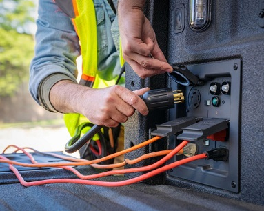 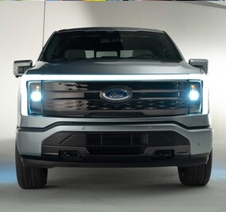 Simplicity of the 12 V System: The beauty of this is that the connection to the car is simply cliping onto the 12v battery as shown further down (The cables should be hardwired and with a fuse for more than maybe a few hundred watts). No mods to the car or high voltage system is required. This is because all EV's and plugin-hybrids use conventional automobile 12v systems for all the conventional automotive accessories. To provide this power, they all have a conventional lead-acid 12 Volt battery that is maintained at 13.8 volts by a 100 amp to 200 amp converter from the high voltage hybrid battery system. Thus you can draw peak powers of 2 or 3 kW from the standard 12v battery and can draw continuous long term power up to the capacity of the hybrid-to-12V converter.
The Prius has a 100 amp converter and the Chevy Volt has a 200 Amp hybrid-to-12V converter. And the Hyundai Ioniq-5 has a 2 kW Vehicle-to-Load (V2L) built in with outlets in the bed and cab.
Vehicle-to-Home (V2H) or Vehicle-to-Load (V2L): The Ford F-150 Pickup now offers a 10 kW power capability. As shown at right are some of the eleven power outlets in the new Ford F-150 EV including 2.4kw of power strips available in the Frunk.. Not only can this provide a huge amount of work-site power or camping or special event power Ford also offers a whole house transfer system that can power a modern house during an outage with 9.6 kW of power suitable to run the house for several to ten days. Think about it... the extended range F-150 has the same battery capacity as ELEVEN tesla power walls at half the price and you get the #1 pickup in America for Free! The J1772 connector is bidirectional!
Solar FRANKENVOLT: Back to my car (or any EV or hybrid without factory V2L or V2H). To add solar and a little glitz, I designed the new flat roofline with three Sonali 80W panels for a BTTF (back-to-the-future) look as shown here with horizontal solar panels and side-curtain-black plywood panels to close in the back. The rear hatch still works in the extended and UP positions. It was impossible to make it 3-way (to include the down position) so I designed it so that the back two hinged solar panels could be easily removed if the side-curtains were out and I wanted to return to original hatchback. Inside is also a 6 foot bed area with plenty of overhead now for overnight camping. Between the solar panels is a 4 inch wide aluminum panel for my Ham antennas and the internal volume increased by about 5 cubic feet for hauling.
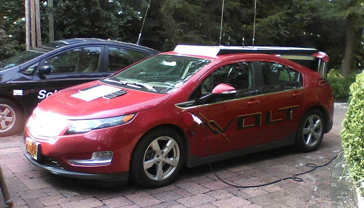 . 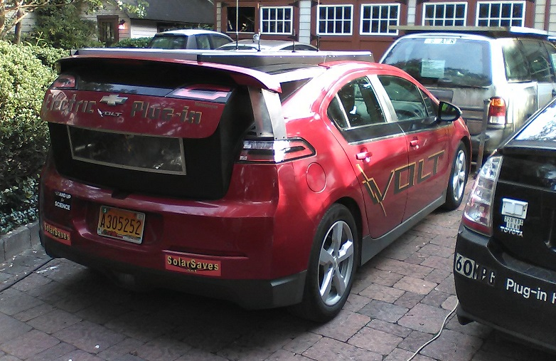
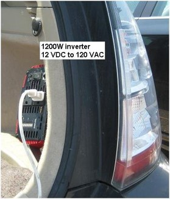 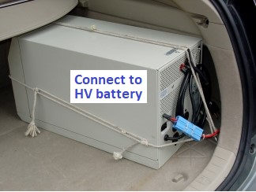 External Power Provision: A primary feature of my EVs and hybrids is to have a 120 Volt inverter to power external loads as noted above. In this case, I have a 1000 W pure-sine inverter hooked to the 12v battery and hidden in the left rear plastic body panel (below left here with cover removed). It tilts out as shown on the right when in use so you can see the front panel and have access to the On//Off button and outlets. When tilted back, it is flush with the side, though it needs a simple plywood cover to blend in.
A good thing about the Volt 12 V system is that it is backed up by a 200 Amp DC/DC converter from the high voltage battery to maintain the 12V system and battery at 13.8 volts under all loads. Many other EVs and small hybrids have at least 100 Amp converters. But on the flip side, the Volt draws more than 500 W just being on, whereas the Prius, for example, only draws 250 W or so.
In the prius, a 3 kW inverter (at right) can be connected directly to the Prius 220v battery. But these are custom built and cost a few thousand dollars. On the far right is the simple 1200 W modified sine inverter I have permanently installed in the back of my Prius. It meets all my power tool needs and can power the lights and refrigerator in the house during a power outage.
Sine VS Modified-sine: Although the inverter I put in the Volt is a pure sine inverter, I have been disappointed in its use. It cannot power any of the heavy power tools I have used with the 1200 W modified sine inverter in the Prius shown at right. That one can power lawnmowers, chain saws, skil saws and even a small AC unit. I dont think the difference is just the 200W different in rated capacity. I think that the electronics in the pure-sine unit are just too sensitive to start-up currents whereas the modified-sine just powers-through. Rather than re-work the installation, I just carry another 1500 W modified sine inverter with battery clips. If I started over, I would definately install the modified sine for all the heavy loads and then only carry the pure-since as the spare. Thought I have never seen anything that did not work on the modified sine and thus required pure sine.
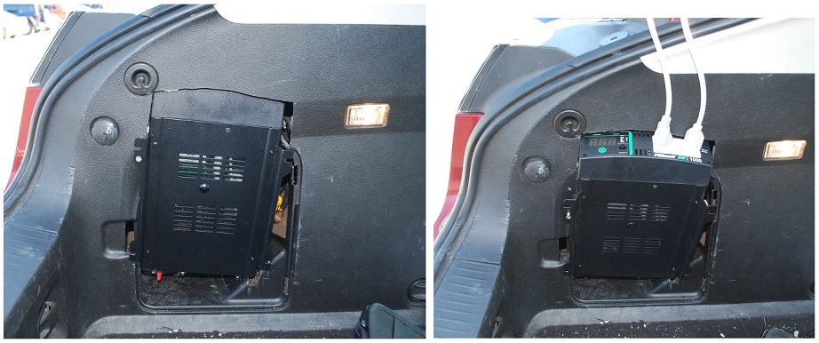
Powering the House: I moved most critical home circuits (lights, refrigerator, computer room, etc) to a sub-panel with six 15 A breakers and fed it from a single breaker in the main panel as shown below. One of these sub-breakers also goes to a standard outlet outside the house. When the grid goes down, I just open the breaker (and all the emergency breakers) then go outside and use a "suicide" cord to plug that outlet into the inverter in the car. The light over my electrical panel area in the basement is also on this last outlet breaker so that I can see if there is power there before starting to re-energize the individual breakers. The paralleling switch ties L1 and L2 together so both phases can be fed from the 120 V from the car. With all LED lighting and with the refrigerator only drawing around 100 W when running, I have no problem powering most everything we need during grid-down conditions from the 1200 W car inverter.
NEC: This wiring does not meet NEC code because just using the distribution breaker to isolate the circuits does not automatically lock-out the mistake of re-energizing it with the external backup feed still on. A proper "generator" transfer switch installed and permitted by a licensed electrician should be used.
175' Cord under-the-seat: I dislike those cheap, stiff-plastic power cords. So, for
convenience, I remove the thick un-bending, cold-brittle 20' #14 orange wire and replace it with over 100'
of #18 zip cord for emergency use. You can still run heavy loads (1kW) through this wire briefly (chain saw to clear
the road). #18 Ampacity is 10 Amps at 60C which is 1200W at 120v. Voltage drop is 13 V at 1 kW across
the 1.3 Ohm round trip. The Home
Depot reel at right comes with 20' of #14, but I can get 175' of zip cord on it for longer range (and greater loss).
Caution: Such use not NEC or UL approved. Unwind extra cord completely on heavy loads to avoid melting!
3200' Single-Wire-Earth-Return (SWER): for greater distances I have used over 3200' of single conductor #22 wire and Ground Rod to deliver 200 to 330 Volts and a few hundred watts using Single-Wire-Earth-Return. Operating at 330 VDC (120 VAC to a doubler circuit) cuts the current by three and therefore current loss by ten. With ground resistance as low as 10 to 100 ohms no-matter-the-distance, its only the wire loss (and soil type) that dominates. With 3000' of #22 (50 ohms) and a ground resistance of 50 ohms (100 total) operating at 2 amps leaves 100 volts at the far end. That's 200W for a laptop and 100 W station using universal input (100-240 V) power supplies.
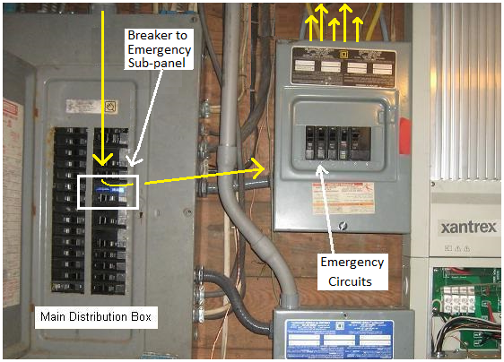 . 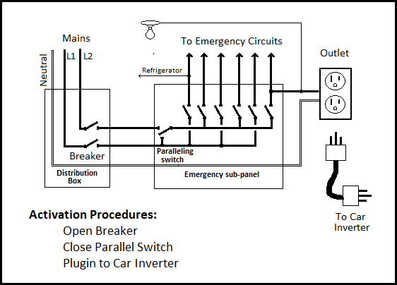
Existing Volt Antennas: I held off on this project for the longest time assuming I was going to have to do amazing surgery and reloaction of the existing roof antennas on the car. After trying to get under the headliner, I realized it was just too much work and so I just proceeded to leave the antennas as is and deal with it later. Amazingly, the Volt's roof mounted GPS, and FM radio antennas still work fine under the panels. I have seen no degradation to the NAV function (I don't subscribe to Onstar nor XM radio). Even the XM radio ad channel comes in fine in a clear sky, but drops out now if even a single tree blocks the satellite. I unscrewed the FM antenna and shoved in a 2' wire that I just leave taped to the car's rear hatch glass. All stations still work fine. In fact, with the nearly 2' long wire, I actually think some stations come in better!
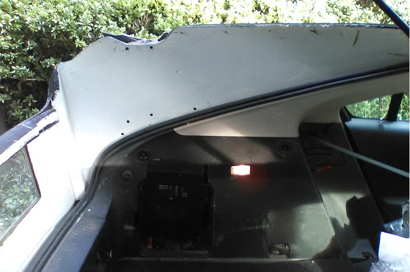 . 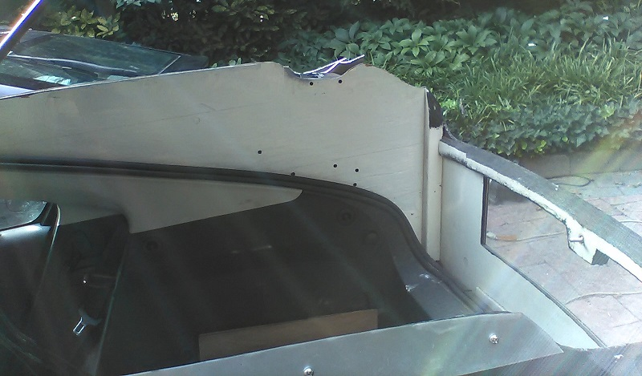
Side Panels: The whole construction is just two flat 1/4" plywood side panels and another panel across the back that just sit in the rain channels of the lift gate as shown above. Two screws in each panel screw into the volt to hold them down. The entire FrankenVolt conversion can be reversed in 3 minutes by removing the screws holding the rear pair of solar panel hinges and lifting them off and then removing the four screws holding the plywood panels. The panels are black on the outside and white on the inside. The panel across the back has the plywood grain vertical so that it was easy to bend into the curve to match the bumper. Then I glued on four more 1/4" layers to help maintain the curve and give strength to the curved panel top. The hatch latching mechanism and rear light switch are built into the lift-gate itself, so they still work as-is with no modification. A bolt through the top of the thick back panel gives the latch something to catch on.
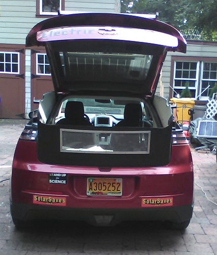 . 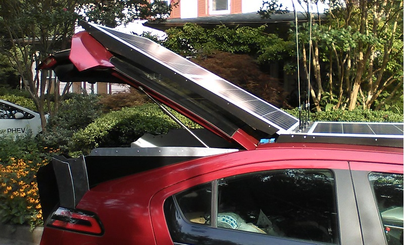 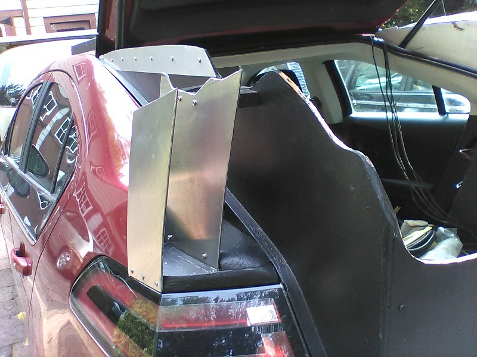
Hinged Solar Panels: The rear hatch can still be opened normally and the solar panels, hinged at the front, just tilt up and the rear solar panels, attached only to their wooden side rails just slide on the car a few inches along the roof. In warm temperatures the original cold gas springs can even hold the gate and panels in the up position, but more often, a temporary pole is used to hold it up and not come down unexpectedly. The single front solar panel is permanently mounted to the car roof by its front aluminum cowling, and its rear 3" wide aluminum antenna mounting bracket.
Plywood Side Panels: Amazingly, the side panels are actually flat plywood. The rain channel down both sides of the hatch are very straight within about 3/4" inch or so all the way down to the rear bumper (except for the last rounded inch). I used cardboard cutouts to get the shape as close as I could and then used a belt sander on the final plywood to match all the vagaries along the top to match the curves in the bottom of the hatch gate. Some 3/4" by 1" wood strips sanded down with a belt sander make the joint along the rain gutter almost perfect as shown here. No water sealing is needed since the rain gutter is still intact and channels all water down and out the back. It was really quite straight forward, though time consuming.
FINS: The fins are just fluff to fill in the discontinuity between the tail lights and lift gate when up. Amazingly I found that a cutting-wheel could cut through scraps of 1/8" aluminum to make them. They fit into two blocks of wood sanded down to fit the pocket at the top of the tail light All of this is attached to the side panel, so again. only removing the 4 screws holding in the side panels can remove everything involved including the fins.
The Future of V2H - Vehicle-to-Home: The right way to fully power a home is with a true V2H converter. These are popular in Japan after the Fukushima nuclear disaster and are made by both Toyota and Nissan. They allow the full capacity of the vehicle battery to power the house through a connection to the HV battery charging system. Normally the device is used daily for charging the car, but during grid-down conditions they can take power from the car into the house as shown here below. This will be a tremendous market once people realize the value of the energy storage capability in their cars.
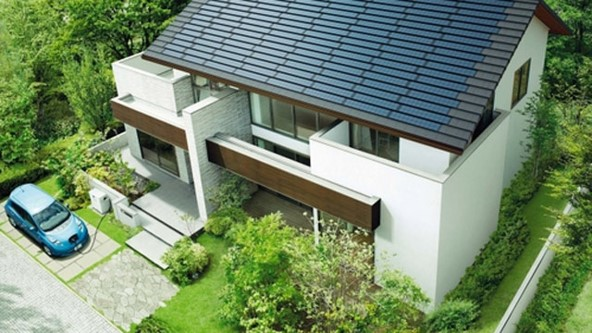 . 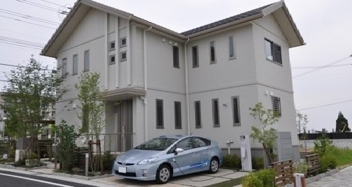 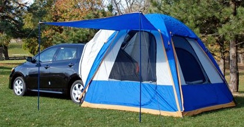
Other Solar Cars: There is a web page titled Real Solar Cars (RealSolarCars.com but it has very little info that I can find other than You Tube videos. I find most of them Verbose and take 5 minutes to say what could have been said in one. They also have no CONTACT INFO so I cannot figure out how to tell them about the FrankenVolt.
EV CAMPING! once you realize the Volt (or other EV) can run for hours and hours on its huge battery capacity, do not overlook the advantage of running the AC while summer camping (or Electric blankets in the winter). Imagine the joy of modern Glamping (glamor camping) when you have all the electricity you need for AC and heat for hours including overnight on silent battery power without fear of CO poisoning. Or being able to camp in any primitave tent camping area while still having power for anything. Though please use headphones! and be mindful of others.
See the sitemap of my other 450 web pages
See my other EVs...